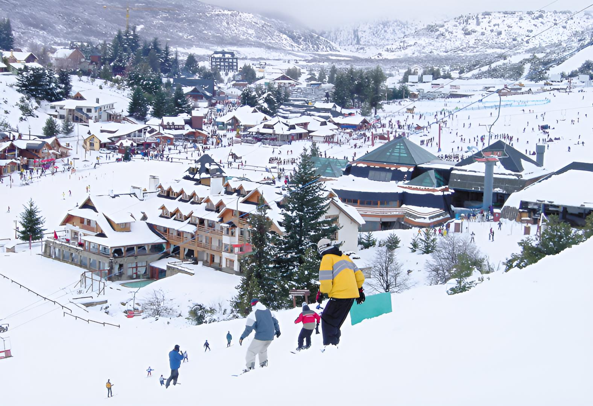

Bariloche: naturaleza y chocolate
Entre lagos, montañas y aroma a chocolate, Bariloche te hace sentir dentro de un cuento.
Llegar a San Carlos de Bariloche es como entrar a un paisaje de película. El lago Nahuel Huapi se extiende al frente, las montañas nevadas se ven a lo lejos y el aire huele a pino y chocolate. Es una mezcla perfecta entre naturaleza y vida urbana, donde cada rincón tiene algo para descubrir.
En invierno, la ciudad se llena de nieve y de turistas que llegan para esquiar en el Cerro Catedral. Pero Bariloche no es solo para los que aman el frío: en verano se puede hacer kayak, senderismo o simplemente disfrutar del paisaje tomando unos mates frente al lago.
Una parada obligada es el Circuito Chico, un recorrido que bordea el lago Nahuel Huapi y pasa por algunos de los miradores más lindos de la Patagonia. Si tenés suerte, vas a ver el atardecer desde el mirador del Hotel Llao Llao, con el cielo tiñéndose de naranja y las montañas reflejándose en el agua.
Y claro, no podés irte sin probar el famoso chocolate barilochense. Hay chocolaterías en cada cuadra, y todas tienen algo distinto: bombones, tabletas, fondues… incluso helado de chocolate caliente (sí, existe y es una locura).
Bariloche tiene ese equilibrio justo entre aventura y descanso. Podés pasar un día entero caminando por senderos o simplemente mirar el paisaje desde una cafetería. Sea cual sea tu plan, el sur te recibe con los brazos abiertos y un trozo de chocolate esperándote.
← Volver a Categorías